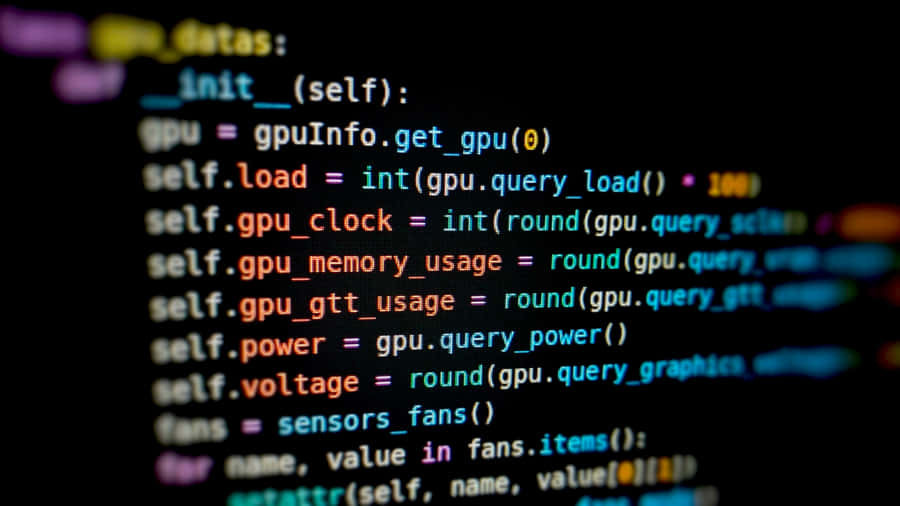
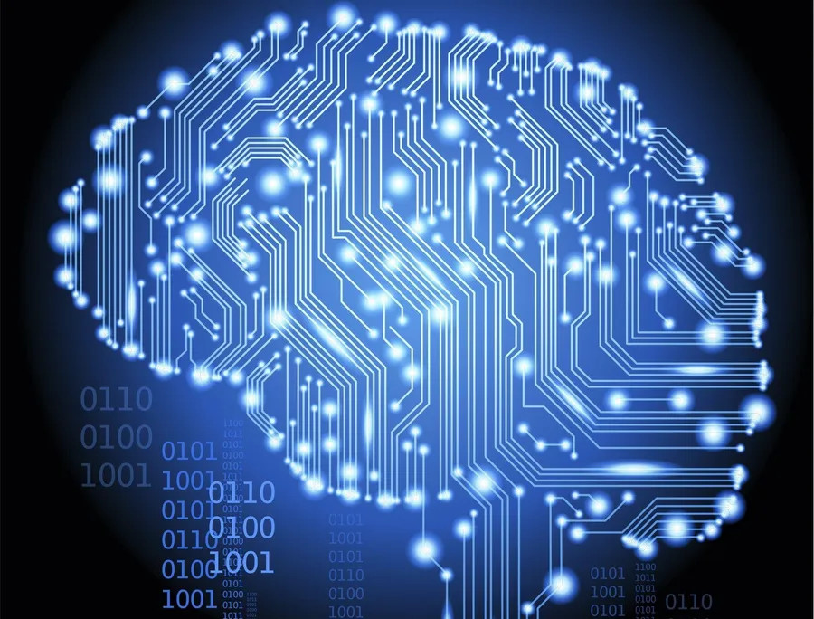

Últimas Publicaciones

Introducción a la Programación con Python
Autor: Ana Castillo
Resumen: Aprende los conceptos básicos de programación con uno de los lenguajes más populares del mundo: Python. Ideal para principiantes.
País: Honduras
Contacto: ana.castillo@steminstitute.org
Introducción a la Robótica para Jóvenes
Autor: Mario López
Resumen: Este artículo detalla cómo iniciarte en el diseño y la programación de robots, con énfasis en plataformas como Arduino y LEGO Mindstorms.
País: México
Contacto: mario.lopez@robotics.edu
La Importancia de la Ciencia en el Desarrollo Social
Autor: Gabriela Mejía
Resumen: Descubre cómo los avances científicos impactan en áreas como la salud, la agricultura y el medio ambiente.
País: Guatemala
Contacto: gabriela.mejia@scienceimpact.org

Aplicaciones de la Inteligencia Artificial
Autor: Diego Torres
Resumen: Un recorrido por las tecnologías que están transformando sectores como la medicina, la educación y la industria.
País: El Salvador
Contacto: diego.torres@aiworld.com
Matemáticas Aplicadas en el Mundo Real
Autor: Carolina Rivera
Resumen: Aprende cómo se utilizan las matemáticas para resolver problemas cotidianos en la ingeniería, la economía y la tecnología.
País: Costa Rica
Contacto: carolina.rivera@mathsolutions.org